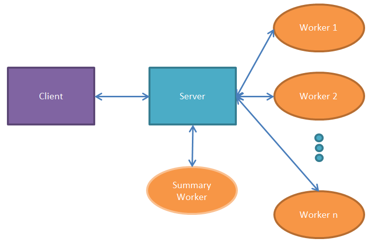
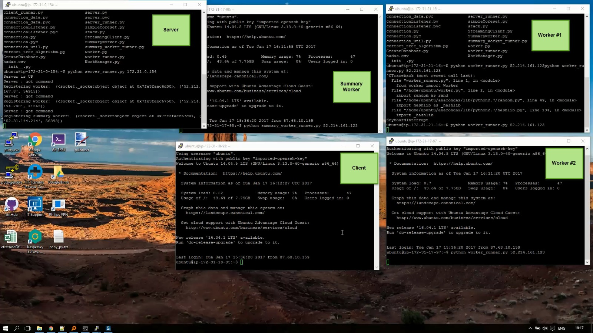

A Server-Client python module which cluster streaming data and generate a final 'Core-Set'.
The 'Core-Set' provides a small representation of the large data. The project was based on Big Data methodologies using deep learning algorithms on Amazon AWS (mainly Amazon EC2).
The system is designed to cluster large amounts of data in streaming format.
The system is made of 3 main parts-
It works in the following manner:
The client provides the data to the server, streaming it via socket communication.
The server then collects the data and distributes it to the workers.
Each worker creates a core-set from its given data. So that in every moment each worker has a corset of the data it received so far.
Upon request from the client, the server collects all the current core-sets from all the workers and sends them to the summary worker- a dedicated worker which creates the final core-set, and sends it back to the server.
The server then returns the final core-set to the client, and we receive a representing smaller portion of the streamed data.
Running the Streaming-Coreset on Amazon Cloud: 
project by:
Dvir Segal, Hadas Shahar and Roy Goldstein